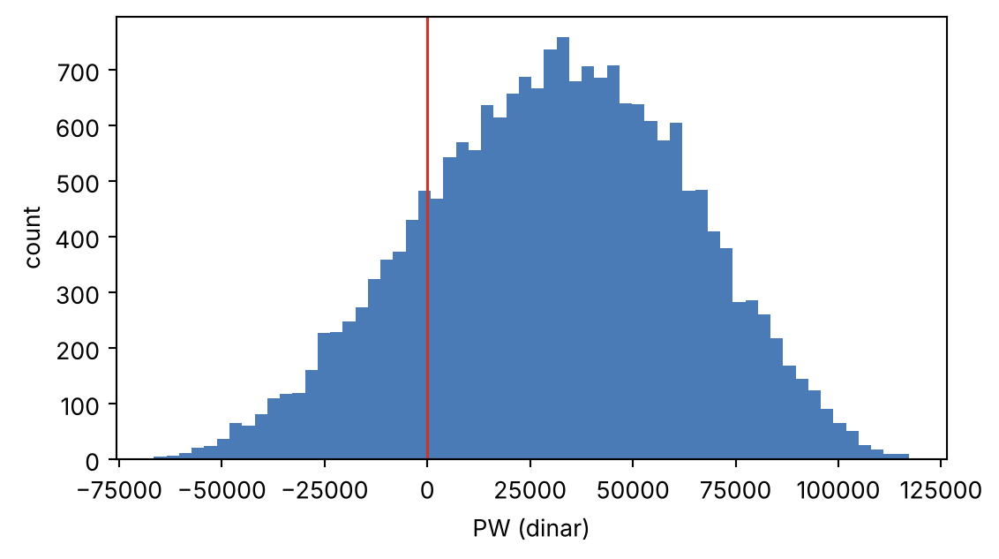

كل رقم في الفصول السابقة كان رقما واحدا: الإيراد كذا، والعمر كذا. في الفصل السابع سألنا: ماذا لو أخطأنا؟ وغيرنا كل متغير لنرى أثره. لكن تحليل الحساسية لا يقول أي الحالات أرجح. هذا الفصل يضيف الاحتمالات: لكل نتيجة ممكنة وزن، فنحسب ما نتوقعه في المتوسط، وكم قد نبتعد عنه، وما احتمال الخسارة.
ثلاث أدوات أساسية:
القيمة المتوقعة والانحراف المعياري: متوسط النتائج، ومقياس تشتتها.
شجرة القرار: لقرارات على مراحل، كل مرحلة بعد أن تتضح معلومات جديدة.
المحاكاة: عندما تكثر المتغيرات غير المؤكدة، نجرب آلاف الحالات بالحاسوب.
10.1 القيمة المتوقعة والانحراف المعياري
المتغير غير المؤكد له عدة قيم ممكنة، ولكل قيمة احتمال. مجموع الاحتمالات 1.
مثال 10.1: القيمة المتوقعة والانحراف المعياري
مدير مبيعات يقدر إيراد منتج جديد في السنة القادمة. الإيراد 40,000 دينار إذا كان الطلب ضعيفا، واحتمال ذلك 0.25. و60,000 دينار إذا كان متوسطا، واحتماله 0.50. و75,000 دينار إذا كان قويا. ما القيمة المتوقعة للإيراد؟ وما الانحراف المعياري؟
الحل:
احتمال الطلب القوي هو الباقي حتى يكتمل المجموع إلى 1:
القيمة المتوقعة متوسط النتائج، كل نتيجة بوزن احتمالها:
هذا ليس الإيراد الذي سيحدث، بل متوسط ما يحدث لو تكرر القرار مرات كثيرة.
التباين متوسط مربع البعد عن القيمة المتوقعة، والانحراف المعياري جذره:
الطلب
الاحتمال
الإيراد
البعد عن المتوقع
مربع البعد ضرب الاحتمال
ضعيف
0.25
40,000
-18,750
87,890,625
متوسط
0.50
60,000
1,250
781,250
قوي
0.25
75,000
16,250
66,015,625
الانحراف المعياري يقيس المخاطرة: كم يبتعد الإيراد عادة عن متوسطه.
10.2 القيمة الحالية المتوقعة
نطبق نفس الفكرة على القيمة الحالية: نحسبها لكل حالة، ثم نأخذ متوسطها بالاحتمالات.
مثال 10.2: القيمة الحالية المتوقعة واحتمال الخسارة
مشروع يكلف 100,000 دينار، وعمره 5 سنوات. صافي تدفقه السنوي يعتمد على السوق: 16,500 دينار باحتمال 0.30، أو 30,500 دينار باحتمال 0.50، أو 41,500 دينار باحتمال 0.20. الحد الأدنى 12%. ما القيمة الحالية المتوقعة؟ وما انحرافها المعياري؟ وما احتمال أن يخسر المشروع؟
الحل:
نحسب القيمة الحالية في كل حالة:
السوق
الاحتمال
التدفق السنوي
القيمة الحالية
ضعيف
0.30
16,500
-40,521
متوسط
0.50
30,500
9,946
قوي
0.20
41,500
49,598
القيمة الحالية خطية في التدفق السنوي، فنفس النتيجة تأتي من التدفق المتوقع مباشرة:
احتمال الخسارة هو مجموع احتمالات الحالات التي قيمتها الحالية سالبة: 0.30.
القيمة المتوقعة موجبة، فالمشروع مقبول بمعيار القيمة المتوقعة، لكن الشركة تخسر في بعض الحالات. هل تتحمل الخسارة إن وقعت؟ هذا سؤال لا تجيب عنه القيمة المتوقعة وحدها.
القيمة المتوقعة وحدها قد تخفي خطرا كبيرا. مشروعان لهما نفس القيمة المتوقعة، أحدهما لا يخسر أبدا، والآخر يخسر نصف رأس المال في حالة من ثلاث. لذلك نذكر دائما الانحراف المعياري واحتمال الخسارة معها.
عندما يدخل المتغير في القيمة الحالية بشكل خطي، مثل التدفق السنوي، تكفي القيمة المتوقعة للمتغير. عندما لا يكون خطيا، مثل العمر أو نسبة الفائدة، يجب الحساب لكل حالة.
مثال 10.3: عمر غير مؤكد: القيمة المتوقعة ليست قيمة المتوسط
آلة تكلف 60,000 دينار، وتوفر 17,000 دينار سنويا. عمرها غير مؤكد: 3 سنوات باحتمال 0.50، أو 7 سنوات باحتمال 0.50. الحد الأدنى 12%. قارن القيمة الحالية المتوقعة بالقيمة الحالية عند العمر المتوقع.
الحل:
القيمة الحالية المتوقعة: نحسب لكل عمر، ثم نأخذ المتوسط بالاحتمالات.
القيمة الحالية عند العمر المتوقع: العمر المتوقع 5.00 سنة:
الرقمان مختلفان. القيمة الحالية ليست خطية في العمر: السنوات البعيدة تضيف أقل من القريبة. القاعدة: احسب القيمة الحالية لكل حالة، ثم خذ المتوسط. لا تأخذ متوسط المدخلات ثم تحسب، إلا إذا كانت العلاقة خطية.
إذا كانت التدفقات في السنوات المختلفة مستقلة، وعرفنا متوسط وانحراف كل منها، نحسب متوسط القيمة الحالية وانحرافها مباشرة، ثم نقرب توزيعها بالتوزيع الطبيعي.
مثال 10.4: تدفقات مستقلة كل سنة
مشروع يكلف 50,000 دينار اليوم. تدفقه في كل سنة من السنوات الثلاث غير مؤكد، ومستقل عن السنوات الأخرى:
السنة
1
2
3
القيمة المتوقعة
22,000
24,000
26,000
الانحراف المعياري
3,000
5,000
7,000
الحد الأدنى 10%. ما القيمة الحالية المتوقعة وانحرافها المعياري؟ وما احتمال الخسارة إذا كان توزيع القيمة الحالية طبيعيا تقريبا؟
الحل:
القيمة المتوقعة: نخصم القيم المتوقعة:
التباين: كل تدفق مضروب في معامل الخصم، فتباينه يضرب في مربع المعامل. والتدفقات مستقلة، فتجمع التباينات:
احتمال الخسارة: نحسب عدد الانحرافات المعيارية بين الصفر والقيمة المتوقعة، ثم نقرأ الاحتمال من التوزيع الطبيعي المعياري:
=NORM.S.DIST(-1.30, TRUE)
احتمال الخسارة 9.73%.
إذا كانت التدفقات مرتبطة، فالسنة الجيدة تتبعها سنة جيدة، يكون الانحراف المعياري أكبر من هذا، والمخاطرة أعلى.
10.3 المقارنة بين بدائل فيها مخاطرة
عندما يكون للبديل الأعلى قيمة متوقعة مخاطرة أعلى أيضا، لا يوجد جواب واحد صحيح. الشركة الكبيرة التي تنفذ مشاريع كثيرة تقترب من القيمة المتوقعة في المتوسط، فتختار الأعلى. الشركة الصغيرة التي قد تفلس من خسارة واحدة تفضل المخاطرة الأقل.
مثال 10.5: مشروعان: عائد أعلى أم مخاطرة أقل؟
مشروعان متنافيان. القيمة الحالية لكل منهما في ثلاث حالات للسوق:
السوق
الاحتمال
المشروع أ
المشروع ب
ضعيف
0.30
10,000
-20,000
متوسط
0.40
20,000
25,000
قوي
0.30
30,000
60,000
قارن بالقيمة المتوقعة والانحراف المعياري.
الحل:
أ
ب
القيمة المتوقعة
20,000.00
22,000.00
الانحراف المعياري
7,745.97
31,080.54
معامل الاختلاف
0.39
1.41
معامل الاختلاف هو الانحراف المعياري مقسوما على القيمة المتوقعة: مخاطرة كل دينار متوقع.
المشروع ب أعلى قيمة متوقعة، وأعلى مخاطرة. لا يوجد مشروع أفضل في الاثنين معا، فالاختيار يعتمد على قدرة الشركة على تحمل الخسارة في السوق الضعيف.
10.4 شجرة القرار
بعض القرارات تتخذ على مراحل. نقرر اليوم، ثم تكشف الأيام شيئا، ثم نقرر مرة أخرى. شجرة القرار ترتب هذه المراحل، وتحل من النهاية إلى البداية: عند كل احتمال نحسب القيمة المتوقعة، وعند كل قرار نختار الأفضل.
مثال 10.6: شجرة القرار: مصنع كبير أم صغير؟
شركة تختار بين بناء مصنع كبير أو صغير. الطلب سيكون مرتفعا باحتمال 0.60، أو منخفضا. القيمة الحالية لكل حالة:
طلب مرتفع
طلب منخفض
مصنع كبير
900,000
-250,000
مصنع صغير
450,000
50,000
ارسم شجرة القرار، واختر.
الحل:
شجرة القرار ترسم من اليسار إلى اليمين:
عقدة القرار، مربع: الشركة تختار أحد الفروع.
عقدة الاحتمال، دائرة: الطبيعة تختار، باحتمالات معروفة.
النهايات: القيمة الحالية لكل مسار.
الشجرة لهذا القرار:
قرار: مصنع كبير
طلب مرتفع، باحتمال 0.60: 900,000
طلب منخفض، باحتمال 0.40: -250,000
قرار: مصنع صغير
طلب مرتفع، باحتمال 0.60: 450,000
طلب منخفض، باحتمال 0.40: 50,000
نحل من اليمين إلى اليسار. عند كل دائرة نحسب القيمة المتوقعة:
عند المربع نختار الفرع الأعلى: المصنع الكبير.
لكن المصنع الكبير يخسر إذا جاء الطلب منخفضا. شركة صغيرة قد لا تتحمل هذه الخسارة، حتى لو كانت القيمة المتوقعة أعلى.
مثال 10.7: قرار على مرحلتين: ابدأ صغيرا ووسع لاحقا
للشركة في المثال السابق خيار ثالث: تبني المصنع الصغير الآن، وبعد سنتين، إذا ظهر أن الطلب مرتفع، توسعه. التوسعة تضيف 330,000 دينار إلى القيمة الحالية في حالة الطلب المرتفع، بعد طرح تكلفتها. الأرقام الباقية كما هي: الطلب مرتفع باحتمال 0.60، والمصنع الكبير 900,000 أو -250,000 دينار، والصغير 450,000 أو 50,000 دينار. هل يغير هذا الخيار القرار؟
الحل:
في الشجرة الجديدة، فرع المصنع الصغير فيه قرار ثان بعد معرفة الطلب:
قرار: مصنع صغير
طلب مرتفع، باحتمال 0.60: قرار ثان
وسع: 780,000
لا توسع: 450,000
طلب منخفض، باحتمال 0.40: 50,000
نحل من اليمين. عند قرار التوسعة نختار الأعلى: 780,000 دينار. ثم القيمة المتوقعة للفرع:
مقابل 440,000.00 دينار للمصنع الكبير. القرار: ابدأ صغيرا، ووسع إذا ارتفع الطلب.
خيار التوسعة له قيمة، لأنه يسمح بالانتظار حتى تتضح المعلومات. المصنع الكبير يلزم الشركة اليوم، قبل أن تعرف الطلب.
10.5 قيمة المعلومات
إذا كانت المخاطرة سببها نقص المعلومات، فقد يستحق شراء المعلومات قبل القرار: دراسة سوق، أو تجربة إنتاج، أو فحص للتربة. المعلومات لها قيمة فقط إذا كانت قد تغير القرار.
مثال 10.8: قيمة المعلومات الكاملة
للشركة في مثال المصنع الكبير والصغير: الطلب مرتفع باحتمال 0.60. الكبير 900,000 أو -250,000 دينار، والصغير 450,000 أو 50,000 دينار. شركة أبحاث تعرض دراسة تكشف الطلب بدقة كاملة قبل القرار. كم تستحق هذه الدراسة على الأكثر؟
الحل:
بدون معلومات: أفضل قيمة متوقعة 440,000.00 دينار.
مع معلومات كاملة: الشركة تعرف الطلب قبل أن تختار، فتختار الأفضل في كل حالة:
إذا عرفت أن الطلب مرتفع، تختار الكبير، وتحصل على 900,000 دينار.
إذا عرفت أنه منخفض، تختار الصغير، وتحصل على 50,000 دينار.
لكن قبل الدراسة لا تعرف ماذا ستقول. القيمة المتوقعة مع المعلومات:
قيمة المعلومات الكاملة هي الفرق:
لا تدفع الشركة أكثر من 120,000 دينار لأي دراسة. الدراسات الحقيقية غير كاملة، فتستحق أقل من هذا.
مثال 10.9: دراسة سوق غير كاملة
في مثال المصنع: الطلب مرتفع باحتمال 0.60، والكبير 900,000 أو -250,000 دينار، والصغير 450,000 أو 50,000 دينار. دراسة سوق تقول “مرتفع” أو “منخفض”، وتصيب باحتمال 0.80 في الحالتين. كم تستحق الدراسة؟
الحل:
الخطوة 1: احتمال كل نتيجة للدراسة. تقول “مرتفع” إذا كان الطلب مرتفعا وأصابت، أو منخفضا وأخطأت:
الخطوة 2: تحديث الاحتمال بعد النتيجة، بقاعدة بايز:
الخطوة 3: أفضل قرار بعد كل نتيجة، بالاحتمال المحدث:
نتيجة الدراسة
القيمة المتوقعة للكبير
للصغير
الأفضل
مرتفع
735,714
392,857
735,714
منخفض
63,636
159,091
159,091
الخطوة 4: القيمة المتوقعة مع الدراسة:
بدون الدراسة 440,000.00 دينار. قيمة الدراسة 42,000.00 دينار. الشركة تدفع لها حتى هذا المبلغ.
10.6 التوزيع الطبيعي
كثير من المتغيرات، مثل الطلب السنوي، تتوزع تقريبا توزيعا طبيعيا حول متوسطها. إذا عرفنا المتوسط والانحراف المعياري، نحسب احتمال أي مجال. الدالة NORM.DIST في Excel تعطي الاحتمال مباشرة.
مثال 10.10: احتمال أن تتجاوز المبيعات نقطة التعادل
خط إنتاج تكاليفه الثابتة 120,000 دينار سنويا. سعر الوحدة 25 دينار، والتكلفة المتغيرة 15 دينار. المبيعات السنوية غير مؤكدة: توزيعها طبيعي تقريبا، بمتوسط 15,000 وحدة وانحراف معياري 3,000 وحدة. ما احتمال أن يخسر الخط؟
الحل:
نقطة التعادل من الفصل السادس:
الخط يخسر إذا جاءت المبيعات أقل منها. نحول إلى التوزيع الطبيعي المعياري:
=NORM.DIST(12000.00, 15000, 3000, TRUE)
احتمال الخسارة 15.87%. الاحتمال مقبول لأغلب الشركات، لكنه ليس صفرا.
10.7 المحاكاة: مونت كارلو
عندما تكون متغيرات كثيرة غير مؤكدة معا، يصبح حساب كل الحالات مستحيلا. المحاكاة تجرب آلاف الحالات: في كل مرة تسحب قيمة عشوائية لكل متغير من توزيعه، وتحسب القيمة الحالية. النتيجة توزيع كامل للقيمة الحالية، نقرأ منه المتوسط والانحراف واحتمال الخسارة.
مثال: خط الإنتاج في الفصل السابع يكلف 150,000 دينار، ورأس المال العامل 15,000. نفترض الآن أن ثلاثة متغيرات غير مؤكدة:
المتغير
التوزيع
الإيراد السنوي
مثلثي: أقل قيمة 90,000، والأرجح 120,000، وأعلى قيمة 140,000
import numpy as npimport numpy_financial as npfimport matplotlib.pyplot as pltrng = np.random.default_rng(2026)N =20000C, W, t, i, n =150000, 15000, 0.20, 0.12, 5R = rng.triangular(90000, 120000, 140000, N)O = rng.uniform(55000, 70000, N)M = rng.uniform(5000, 35000, N)cf = (R - O) * (1- t) + t * C / npw =-C - W + cf * (1- (1+ i) **-n) / i + (M * (1- t) + W) / (1+ i) ** nprint(f"mean PW {pw.mean():12,.0f}")print(f"std of PW {pw.std():12,.0f}")print(f"P(PW < 0) {(pw <0).mean():12.2%}")print(f"5th pct {np.percentile(pw, 5):12,.0f}")plt.figure(figsize=(6, 3.4))plt.hist(pw, bins=60, color="#4a7bb7")plt.axvline(0, color="#c0392b", lw=1.2)plt.xlabel("PW (dinar)")plt.ylabel("count")plt.tight_layout()plt.show()
mean PW 30,830
std of PW 32,203
P(PW < 0) 18.09%
5th pct -24,312

توزيع القيمة الحالية في 20,000 محاكاة
الخط الأحمر عند الصفر. المساحة على يساره احتمال الخسارة. الرقم المئوي الخامس يعني: في 95% من الحالات تكون القيمة الحالية أعلى منه، فهو مقياس لأسوأ حالة معقولة.
كل تشغيل للمحاكاة بأرقام عشوائية مختلفة يعطي أرقاما قريبة لكن غير متطابقة. مع 20,000 محاولة، يتغير احتمال الخسارة في الخانة العشرية الثانية فقط. البذرة الثابتة في البرنامج تجعل النتيجة قابلة للتكرار.
لمن يريد أن يستزيد: المحاكاة في Excel ممكنة أيضا: الدالة RAND تعطي رقما عشوائيا، وجدول البيانات Data Table يكرر الحساب ألف مرة.
10.16 عدد الأعطال الكبيرة في خط إنتاج خلال سنة: صفر باحتمال 0.50، وعطل واحد باحتمال 0.30، وعطلان باحتمال 0.15، وثلاثة باحتمال 0.05. كل عطل يكلف 3,500 دينار. ما التكلفة السنوية المتوقعة للأعطال؟
10.17 شركة مقاولات تدرس التقدم لعطاء. إعداد العرض يكلف 6,000 دينار. إذا فازت، تربح 80,000 دينار. احتمال الفوز 0.30. ما الربح المتوقع من التقدم؟ وما أقل احتمال فوز يجعل التقدم مجديا؟
10.18 مستودع قيمته 200,000 دينار. احتمال حريق يدمره في سنة 0.01. قسط التأمين السنوي 3,000 دينار. قارن القسط بالخسارة المتوقعة. لماذا تؤمن الشركات حتى لو كان القسط أعلى منها؟
10.21 تكلفة مشروع من بندين مستقلين: المواد بمتوسط 20,000 وانحراف 3,000 دينار، والعمالة بمتوسط 15,000 وانحراف 4,000 دينار. ما متوسط التكلفة الكلية وانحرافها؟
10.22 آلة توفر عدد ساعات عمل في السنة: 1,500 ساعة باحتمال 0.40، أو 2,000 ساعة. قيمة الساعة 6 دينار باحتمال 0.50، أو 9 دينار. المتغيران مستقلان. ما الوفر السنوي المتوقع؟
10.25 مشروع صغير قيمته الحالية المتوقعة 40,000 دينار وانحرافها 12,000 دينار. مشروع كبير قيمته المتوقعة 150,000 دينار وانحرافها 30,000 دينار. أيهما أخطر لكل دينار متوقع؟
10.26 محرك رئيسي قد يتعطل هذه السنة باحتمال 0.25. إذا تعطل ولم يكن عند المصنع محرك احتياطي، يتوقف الإنتاج ويخسر 22,000 دينار. المحرك الاحتياطي يكلف 4,000 دينار، ولا قيمة له إذا لم يستخدم. هل يشتري المصنع محركا احتياطيا؟
10.27 مشروع يكلف 40,000 دينار لمدة 5 سنوات. تدفقه السنوي 7,000 دينار باحتمال 0.40، أو 14,500 دينار. الحد الأدنى 10%. احسب القيمة الحالية المتوقعة، وانحرافها المعياري، واحتمال الخسارة.
10.28 فندق صغير يدرس إضافة جناح يكلف 250,000 دينار، لمدة 8 سنوات. صافي دخله السنوي يعتمد على السياحة: 32,000 دينار باحتمال 0.25، و52,000 باحتمال 0.50، و72,000 باحتمال 0.25. الحد الأدنى 12%. ما القيمة الحالية المتوقعة وانحرافها؟
10.29 مشروع يعطي 15,000 دينار سنويا لمدة 6 سنوات. تكلفة البناء 50,000 دينار إذا سارت الأمور كما خطط، باحتمال 0.60، أو 65,000 دينار إذا ظهرت مشاكل في التربة. الحد الأدنى 10%. ما القيمة الحالية المتوقعة؟
10.30 مشروع يكلف 60,000 دينار ويعطي 14,000 دينار سنويا لمدة 7 سنوات. الشركة غير متأكدة من تكلفة تمويلها: 8% باحتمال 0.50، أو 14%. احسب القيمة الحالية المتوقعة، وقارنها بالقيمة الحالية عند النسبة المتوقعة.
10.31 نظام أتمتة يكلف 30,000 دينار، ويوفر 6,500 دينار سنويا. قد يصبح قديما بعد 4 سنوات باحتمال 0.40 إذا ظهرت تكنولوجيا جديدة، وإلا يخدم 8 سنوات. الحد الأدنى 10%. ما القيمة الحالية المتوقعة؟ وما احتمال الخسارة؟
10.32 مشروع يكلف 50,000 دينار. متغيران مستقلان: التدفق السنوي 10,000 دينار باحتمال 0.50 أو 16,000 دينار، والعمر 5 سنوات باحتمال 0.60 أو 8 سنوات. الحد الأدنى 10%. ابن جدول الحالات الأربع، واحسب القيمة الحالية المتوقعة.
10.38 القيمة الحالية لمشروع في أربع حالات: -15,000 و10,000 و35,000 و60,000 دينار، باحتمالات 0.15 و0.35 و0.30 و0.20. ابن جدول الاحتمال التراكمي، وأجب: ما احتمال أن تقل القيمة الحالية عن 35,000 دينار؟
10.39 آلة تكلف 70,000 دينار، وتعطي 18,000 دينار سنويا لمدة 5 سنوات. قيمة بيعها في النهاية صفر باحتمال 0.50 إذا تغيرت المواصفات، أو 15,000 دينار. الحد الأدنى 10%. ما القيمة الحالية المتوقعة؟
10.40 تدفق سنوي لمدة 4 سنوات، انحرافه المعياري 5,000 دينار كل سنة. الحد الأدنى 10%. احسب انحراف القيمة الحالية إذا كانت السنوات مستقلة، ثم إذا كانت مرتبطة تماما: السنة الجيدة تتبعها سنوات جيدة.
10.44 مشروعان، قيمتهما الحالية في ثلاث حالات باحتمالات 0.30 و0.40 و0.30: أ يعطي 8,000 أو 12,000 أو 15,000، وب يعطي -6,000 أو 15,000 أو 35,000 دينار. ماذا يختار مدير يحكم بأسوأ حالة؟ وماذا يختار مدير يحكم بالقيمة المتوقعة؟
10.46 شركة حدها الأدنى 10% للمشاريع العادية. تضيف 5% للمشاريع عالية المخاطرة. مشروع جديد يكلف 80,000 دينار، ويعطي 22,000 دينار سنويا لمدة 6 سنوات، وتصنفه الشركة عالي المخاطرة. احسب القيمة الحالية بالحدين. ما عيب هذه الطريقة؟
10.47 شركة تختار بين مشروع واحد كبير، أو مشروعين صغيرين مستقلين. كل مشروع صغير متوسطه 20,000 وانحرافه 12,000 دينار. المشروع الكبير يساوي ضعف مشروع صغير في كل حالة. قارن المتوسط والانحراف واحتمال الخسارة.
10.48 ثلاثة مشاريع: أ متوسطه 40,000 وانحرافه 10,000 دينار. ب متوسطه 35,000 وانحرافه 12,000 دينار. ج متوسطه 50,000 وانحرافه 25,000 دينار. أي مشروع لا يمكن أن تختاره شركة عاقلة؟
10.50 مدير مكافأته مرتبطة بأن تتجاوز القيمة الحالية 30,000 دينار. المشروع أ متوسطه 40,000 وانحرافه 10,000، والمشروع ب متوسطه 50,000 وانحرافه 30,000 دينار، بتوزيع طبيعي. أي مشروع يعطيه احتمالا أعلى للمكافأة؟
10.53 بديلان، وثلاث حالات للسوق باحتمالات 0.30 و0.40 و0.30. أ يعطي -40,000 أو 30,000 أو 110,000 دينار. ب يعطي 10,000 أو 35,000 أو 60,000 دينار. أيهما أفضل بالقيمة المتوقعة؟
10.56 شركة أدوية بيطرية تدرس تطوير منتج. البحث يكلف 50,000 دينار، وينجح باحتمال 0.40. إذا نجح، تقرر هل تطرحه: الطرح يعطي 600,000 دينار إذا كان السوق جيدا، باحتمال 0.50، أو -100,000 دينار إذا كان ضعيفا. إذا فشل البحث، لا شيء. هل تبدأ البحث؟
10.57 محطة تحلية تختار بين وحدة كبيرة الآن، أو وحدة صغيرة مع إمكانية إضافة وحدة ثانية بعد 3 سنوات إذا ارتفع الطلب. الطلب مرتفع باحتمال 0.50. الكبيرة تعطي 500,000 أو -120,000 دينار. الصغيرة وحدها تعطي 260,000 أو 40,000 دينار. الإضافة في حالة الطلب المرتفع تزيد القيمة الحالية 180,000 دينار بعد طرح تكلفتها. ماذا تختار؟ وكم تساوي إمكانية الإضافة؟
10.58 مشروع يكلف 200,000 دينار. بعد السنة الأولى يتضح الطلب. إذا كان مرتفعا، باحتمال 0.60، القيمة الحالية للتدفقات الباقية 450,000 دينار. إذا كان منخفضا، 120,000 دينار إذا استمر المشروع، أو 150,000 دينار إذا أوقفته الشركة وباعت المعدات. ما القيمة المتوقعة مع إمكانية الإيقاف وبدونها؟
10.59 آلة معطلة. إصلاحها يكلف 9,000 دينار، لكن الإصلاح يفشل باحتمال 0.35، فتحتاج الشركة عندها آلة جديدة تكلف 30,000 دينار. البديل شراء الجديدة الآن. أيهما أرخص بالقيمة المتوقعة؟ تجاهل الفرق في الزمن.
10.61 استثمار 100,000 دينار اليوم. بعد 3 سنوات يباع المشروع بمبلغ 200,000 دينار إذا نجح، باحتمال 0.50، أو 60,000 دينار. الحد الأدنى 10%. ما القيمة الحالية المتوقعة؟
10.62 للقرار بين أ وب: أ يعطي 250,000 أو -90,000 دينار، وب يعطي 120,000 أو 30,000 دينار، والحالة الأولى باحتمال 0.60. احسب القيمة المتوقعة واحتمال الخسارة لكل منهما.
10.64 معدات قيمتها 150,000 دينار، واحتمال تلفها الكامل في سنة 0.03. تأمين شامل بقسط 5,500 دينار، لكن الشركة تتحمل أول 20% من الخسارة. ما التكلفة المتوقعة مع التأمين وبدونه؟
10.65 منتج جديد يربح 120,000 دينار إذا نجح، باحتمال 0.55، ويخسر 70,000 دينار إذا فشل. البديل عدم الإطلاق، بقيمة صفر. ما قيمة المعلومات الكاملة عن نجاح المنتج؟
10.68 احتمال نجاح منتج 0.50 قبل أي دراسة. دراسة سوق تصيب باحتمال 0.80، سواء كان المنتج سينجح أو يفشل. إذا قالت الدراسة “ناجح”، ما احتمال النجاح؟ وإذا قالت “فاشل”؟
10.69 منتج يربح 120,000 دينار إذا نجح، ويخسر 70,000 إذا فشل. احتمال النجاح 0.50. البديل عدم الإطلاق. دراسة سوق تصيب باحتمال 0.80 في الحالتين. كم تستحق الدراسة؟
10.71 قرار إطلاق منتج: ربح 150,000 دينار أو خسارة 100,000 دينار، واحتمال النجاح 0.50. لماذا تكون قيمة المعلومات أكبر عندما يكون القرار صعبا، أي الاحتمال قريبا من نقطة التعادل؟ احسب قيمة المعلومات الكاملة هنا.
10.72 مهندس يقترح إجراء تجربة إنتاج تكلف 15,000 دينار قبل شراء خط جديد. قيمة المعلومات الكاملة للقرار 40,000 دينار، وقيمة التجربة المحسوبة بدقتها 12,000 دينار. هل تجري الشركة التجربة؟
10.80 مشروع يكلف 60,000 دينار لمدة 5 سنوات. التدفق السنوي غير مؤكد، لكنه نفسه كل سنة: متوسطه 16,000 وانحرافه 4,000 دينار، وتوزيعه طبيعي. الحد الأدنى 10%. ما احتمال الخسارة؟
10.82 القيمة الحالية لمشروع بالحد الأدنى للشركة طبيعية بمتوسط 35,000 وانحراف 20,000 دينار. ما احتمال أن يكون المعدل الداخلي للمشروع أعلى من الحد الأدنى؟
حل هذه المسائل بجدول في Excel أو ببرنامج Python، وليس باليد.
10.83 القيم 40,000 و60,000 و75,000 دينار في A2:A4، واحتمالاتها 0.25 و0.50 و0.25 في B2:B4. احسب القيمة المتوقعة والانحراف المعياري في Excel بصيغتين فقط.
10.85 اكتب في Python برنامجا بمكتبة numpy يحسب القيمة الحالية المتوقعة لمشروع يكلف 100,000 دينار لمدة 5 سنوات، وتدفقه السنوي 15,000 أو 28,000 أو 40,000 دينار باحتمالات 0.3 و0.5 و0.2، بحد أدنى 12%.
10.86 مشروع يكلف 50,000 دينار لمدة 6 سنوات. تدفقه السنوي ثابت عبر السنوات، لكن قيمته غير معروفة، وتوزيعها منتظم بين 8,000 و16,000 دينار. الحد الأدنى 10%. اكتب برنامج محاكاة بمئة ألف محاولة يقدر القيمة الحالية المتوقعة واحتمال الخسارة. قارن بالحل الدقيق.
10.87 للمثال في هذا الفصل عن التدفقات المستقلة بأرقامه الأصلية: الثمن 50,000 دينار، والتدفقات بمتوسط 22,000 و24,000 و26,000 وانحراف 3,000 و5,000 و7,000 دينار، والحد الأدنى 10%. اكتب برنامج محاكاة يسحب كل تدفق من توزيع طبيعي، وقارن بالحساب المباشر.
10.88 ابن في Excel مثال المصنع الكبير والصغير بأرقامه الأصلية: الطلب مرتفع باحتمال 0.6، والكبير 900,000 أو -250,000 دينار، والصغير 450,000 أو 50,000 دينار. اجعل القرار يتغير وحده إذا غيرت الاحتمال.
10.89 ابن في Excel محاكاة لمشروع يكلف 60,000 دينار لمدة 5 سنوات، تدفقه السنوي نفسه كل سنة، وتوزيعه طبيعي بمتوسط 16,000 وانحراف 4,000 دينار. الحد الأدنى 10%. استخدم ألف صف.
10.90 اكتب في Python دالة تأخذ جدول نتائج (صف لكل بديل، وعمود لكل حالة) واحتمالات الحالات، وتعيد أفضل بديل وقيمة المعلومات الكاملة. جربها على مثال المصنع بأرقامه الأصلية.
كل حالة قرار كامل فيه مخاطرة، من البداية إلى النهاية.
10.101حالة 10.1: توسعة مصنع أعلاف في طولكرم
مصنع أعلاف يدرس زيادة طاقته، لأن مزارع الدواجن في المنطقة تتوسع. الطلب الإضافي قد يكون مرتفعا أو منخفضا، باحتمالين متساويين. القيمة الحالية بالدينار:
الخيار
طلب مرتفع
طلب منخفض
أ: خط جديد كامل
700,000
-200,000
ب: تحسين الخط الحالي
350,000
80,000
ج: لا شيء
0
0
شركة استشارات زراعية تعرض دراسة للطلب بمبلغ 40,000 دينار. دقتها 85%: إذا كان الطلب مرتفعا تقول ذلك باحتمال 0.85، وإذا كان منخفضا تقول ذلك باحتمال 0.85.
(أ) ما أفضل قرار بدون دراسة؟ (ب) ما قيمة المعلومات الكاملة؟ (ج) ما قيمة الدراسة؟ (د) هل يشتريها المصنع؟
خط تعبئة يحتاج محركا خاصا يتعطل أحيانا. عدد المحركات التي يحتاجها في سنة:
العدد
0
1
2
3
4
الاحتمال
0.20
0.35
0.25
0.15
0.05
كل محرك احتياطي في المخزن يكلف 600 دينار سنويا: فائدة ثمنه، والتخزين، واحتمال التقادم. كل محرك ناقص عند الحاجة يكلف 5,000 دينار: توقف الإنتاج حتى يصل محرك بالطائرة. كم محركا يحتفظ المصنع في المخزن في بداية السنة؟